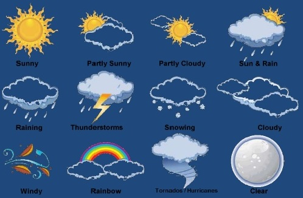

Know Your Current Weather

Don't Go Out Without Knowing Your Weather
Today At {{city}}
{{info?.weather[0].description}}

{{current_temp}}
Min Temp
{{min_temp}}
Max Temp
{{max_temp}}
Description
{{info?.weather[0].description}}
Humidity
{{info?.main.humidity}}
Pressure
{{info?.main.pressure}}